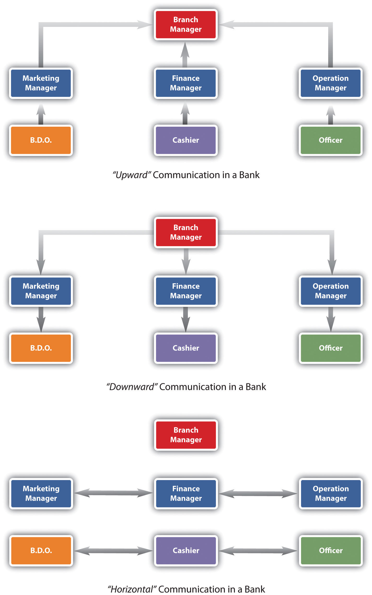

Communication, as you see in our opening scenario, is key to a successful career as a human resource manager (HRM) or as a manager. While communication is likely discussed in several of your business classes, it should also be addressed in an HRM book, since much of what we do in HR is based on effective communication.
How many times do miscommunications happen on a daily basis, either in your personal life or at your job? The good news is that we can all get better at communication. The first thing we need to do is learn how we can communicate with our employees. Then we will want to look at our own communication style and compare that with other styles. Have you ever spoken with someone you just didn’t “get”? It is probably because you have different communication styles. We address this in Section 9.1.3 "Communication Styles". Body language is also a key contributor to communication; in fact, as was suggested in the late 1960s by researcher Albert Mehrabian, body language makes up 93 percent of our communication.Albert Mehrabian and Susan R. Ferris, “Inference of Attitudes from Nonverbal Communication in Two Channels,” Journal of Consulting Psychology 31, no. 3 (1967): 248–58. Part of communication is also looking at the way we manage people. Depending on our style of management, we may use a variety of management styles to communicate things we need done or to give performance feedback. One major way companies communicate with employees is through the use of meetings. Some meetings can be very effective, but as you probably already know, many meetings aren’t very productive. We will discuss some strategies to help you run a more effective meeting.
One of the most important aspects to good communication is emotional intelligence (EI). Emotional intelligenceThe ability to know and manage our emotions, motivate ourselves, understand others’ emotions, and manage relationships. is different from IQ. First, EI predicts much of life success, much more than IQ, in fact.Daniel Goleman, Emotional Intelligence (New York: Bantam Books, 2005). The great thing about EI is that it can actually improve over time, unlike IQ, which stays the same over a lifetime. According to Daniel Goleman,Daniel Goleman, Emotional Intelligence (New York: Bantam Books, 2005). a researcher on EI, there are five main aspects or domains to EI:
First, let’s discuss knowing your emotions. If we don’t know how we feel about something, it can be difficult to communicate. It may seem obvious to know what we are feeling from moment to moment, but oftentimes we do not. How we feel impacts our body language as well as our verbal communication. For example, let’s say you just got home from work and had a really crummy day. When you get home, you find that your spouse has not unloaded the dishwasher yet, as you had agreed. Tie this with a crummy day, and you might communicate differently about it than if you had a great day.
On the other hand, if you recognize that you are tired and a bit cranky, your awareness of these emotions allows you to manage them. The third aspect of EI, motivating yourself, goes without saying in a management or human resource role. This is the key not only to career success but also to personal success.
The last two domains of EI revolve around being able to see and understand emotions in other people, which in turn can benefit the relationship. Let’s say, in the situation above, you get home and the dishwasher isn’t unloaded, but you recognize immediately through body language and facial expressions that your spouse is extremely upset by something. Seeing this emotion in someone else may help you decide if you should mention the dishwasher—or not—at this specific time. But what if you didn’t recognize this emotion and raised your voice to your spouse about the unloaded dishwasher? It will probably result in an argument. Using this example, I am sure you can see how this translates into the workplace. Emotional intelligence allows us to work better with people, understand them, and communicate with them.
Do you think you are a good communicator? What could you improve?
As you already know, communication in companies is key to having a successful organization. Those companies who communicate well with their employees end up with more loyal and motivated workers. Those that don’t communicate well, though, see increased turnover, absenteeism, dissatisfied customers, higher product defect rates, lack of focus on business objectives, and lack of innovation.“Effective Communication in the Workplace,” Business Performance, accessed July 19, 2010, http://www.businessperform.com/workplace-communication/workplace_communication.html. Proper communication can result in a sense of belonging and self-worth, leading to less turnover and absenteeism, which is mentioned in the opening scenario. These issues are also discussed in Chapter 7 "Retention and Motivation". In Section 9.1.3 "Communication Styles", we discuss some of the ways we can stay connected with our employees.
Four main types of communications occur within a company: upward communication, downward communication, diagonal communication, and horizontal communication. Each type of communication can serve a different purpose in human resources, and many messages may be sent in a variety of ways.
Upward communicationWhen the lower levels of an organization communicate with the upper levels of an organization. is when the lower levels of an organization communicate with the upper levels of an organization. Some examples might be an employee satisfaction survey using online survey tools such as SurveyMonkey. These kinds of tools can be used to determine the changes that should occur in a company. Oftentimes human resource departments may develop a survey such as this to find out how satisfied the employees are with things such as benefits. Then the organization can make changes based on the satisfaction level of the employees. Employees might also engage in upward communication in a given work situation. They might tell their manager their plate is full and they can’t take on any new projects. This is considered upward communication, too.
Downward communicationThe opposite of upward communication, in that the communication occurs from the upper levels of an organization down to the lower levels of the organization. is the opposite of upward communication, in that the communication occurs from the upper levels of an organization down to the lower levels of the organization. A manager explaining how to do a task to an employee would be considered downward communication. Development of training programs to communicate safety in the organization might be another example. A change in a pay or bonus structure would be communicated using the downward approach as well.
Figure 9.1 Types of Communication Flow in Organizations
A diagonal communicationInterdepartmental communication occurring at various levels of the organization. approach occurs when interdepartmental communication occurs with people at different levels of the organization. When the human resources assistant speaks with the marketing manager about the hiring of a new employee in marketing, this would be considered diagonal communication.
Horizontal communicationWhen people at the same level in the organization communicate. occurs when people of the same level in an organization, for example, a marketing manager and a human resource manager, communicate usually to coordinate work between departments. An accounting manager might share information with a production manager so the production manager knows how much budget they have left.
Within all the communication methods we discussed, there are a variety of approaches. Of course, the most obvious is the informal communication that occurs. An e-mail may be sent or a phone call made. Meetings are another way to communicate information. Companies can also use more formal means to communicate. A blog would be an example. Many companies use blogs to communicate information such as financial numbers, changes to policy, and other “state of the business” information. This type of information is often downward communication. However, blogs are not just for upper management anymore. Companies are using microblogs more and more to ensure that people in various departments stay connected with each other, especially when tasks tend to be very interdependent.
Companies also use social networking sites to keep in touch, such as Twitter and Facebook. For example, Alcatel-Lucent, a 77,000-employee telecommunications company in Europe, found that using social media keeps a large number of employees connected and tends to be a low or no-cost method of communicating. Rather than sending e-mail to their employees telling them to expect updates via these methods, the news is spread via word of mouth as most of the employees blog or use Facebook or other social media to communicate. In fact, Alcatel-Lucent has over eight hundred groups in its system, ranging from business related to ones social in nature.Sharon Gaudin, “Alcatel-Lucent Gets Social with Company Communication,” Computerworld, accessed July 19, 2010, http://www.computerworld.com/s/article/9179169/Alcatel_Lucent_gets_social_with_company_communication. Use of this type of technology can result in upward, downward, horizontal, and diagonal communication all at once.
Companies also use intranets to communicate information to their employees. An intranet is an internal website, meaning that others generally cannot log in and see information there. The intranet may include information on pay and vacation time as well as recent happenings, awards, and achievements.
In addition to the communication that occurs within organizations, each of us has our own individual communication style. Many organizations give tests that may indicate their candidate’s preferred style, providing information on the best job fit.
Our communication styles can determine how well we communicate with others, how well we are understood, and even how well we get along with others. As you can imagine, our personality types and our communication styles are very similar. Keep in mind, though, that no one person is “always” one style. We can change our style depending on the situation. The more we can understand our own dominant communication style and pinpoint the styles of others, the better we can communicate. The styles are expresser, driver, relater, and analytical. Let’s discuss each of these styles next.
People with an expresser communication styleA communication style that is easily excitable and relies heavily on hunches and feelings. tend to get excited. They like challenges and rely heavily on hunches and feelings. Depending on the type of business, this can be a downfall as sometimes hard data should be used for decision-making purposes. These people are easily recognized because they don’t like too many facts or boring explanations and tend to be antsy if they feel their time is being wasted with too many facts.
People with a driver styleA communication style in which a person likes to have his or her own way and be decisive. like to have their own way and tend to be decisive. They have strong viewpoints, which they are not afraid to share with others. They like to take charge in their jobs but also in the way they communicate. Drivers usually get right to the point and not waste time with small talk.
People with a relater styleA communication style by someone who prefers to be warmly regarded and have positive attention. like positive attention and want to be regarded warmly. They want others to care about them and treat them well. Because relaters value friendships, a good way to communicate well with them is to create a communication environment where they can feel close to others.
People with an analytical communication styleA communication style in which a person tends to ask a lot of questions and behave methodically. will ask a lot of questions and behave methodically. They don’t like to be pressured to make a decision and prefer to be structured. They are easily recognized by the high number of questions they ask.
Table 9.1 Which One of These Communication Styles Do You Tend to Use?
| Passive | Assertive | Aggressive | |
|---|---|---|---|
| Definition | Communication style in which you put the rights of others before your own, minimizing your own self-worth | Communication style in which you stand up for your rights while maintaining respect for the rights of others | Communication style in which you stand up for your rights but you violate the rights of others |
| Implications to others | my feelings are not important | we are both important | your feelings are not important |
| I don't matter | we both matter | you don't matter | |
| I think I'm inferior | I think we are equal | I think I'm superior | |
| Verbal styles | apologetic | I statements | you statements |
| overly soft or tentative voice | firm voice | loud voice | |
| Nonverbal styles | looking down or away | looking direct | staring, narrow eyes |
| stooped posture, excessive head nodding | relaxed posture, smooth and relaxed movements | tense, clenched fists, rigid posture, pointing fingers | |
| Potential consequences | lowered self-esteem | higher self-esteem | guilt |
| anger at self | self-respect | anger from others | |
| false feelings of inferiority | respect from others | lowered self-esteem | |
| disrespect from others | respect of others | disrespect from others | |
| pitied by others | feared by others |
Let’s discuss an example of how these communication styles might interact. Let’s assume an analytical communicator and a relater are beginning a meeting where the purpose is to develop a project time line. The analytical communicator will be focused on the time line and not necessarily the rapport building that the relater would be focused on. The conversation might go something like this:
| Relater: | What are you doing this weekend? I am going to my son’s baseball game. It is supposed to be hot—I am looking forward to it. |
| Analytical: | That’s great. OK, so I was thinking a start date of August 1st for this project. I can get Kristin started on a to-do list for the project. |
| Relater: | That would be great. Kristin is a really hard worker, and I’m sure she won’t miss any details. |
| Analytical: | Yes, she’s OK. So, your team will need to start development now with a start day coming up. How are you going to go about this? |
How do these two personality styles walk away from this conversation? First, the relater may feel ignored or rejected, because the analytical communicator didn’t want to discuss weekend details. The analytical communicator may feel annoyed that the relater is wasting time talking about personal things when they have a goal to set a project time line. These types of small miscommunications in business are what can create low morale, absenteeism, and other workplace issues. Understanding which style we tend to use can be the key in determining how we communicate with others. Here is another, personal example of these communication styles and how a conversation might go:
| Expresser, to his partner: | I am really excited for our hiking trip this weekend. |
| Driver: | I still think we should leave on Thursday night rather than Friday. |
| Expresser: | I told you, I don’t think I can get all day Friday off. Besides, we won’t have much time to explore anyway, if we get there on Thursday, it will already be dark. |
| Driver: | It won’t be dark; we will get there around 7, before anyone else, if we leave after work. |
| Expresser: | I planned the trip. I am the one who went and got our food and permits, I don’t see why you have to change it. |
| Driver: | You didn’t plan the trip; I am the one who applied for the permits. |
In this situation, you can see that the expresser is just excited about the trip and brings up the conversation as such. The driver has a tendency to be competitive and wants to win, hence his willingness to get there Thursday before everyone else. The expresser, on the other hand, tried to sell his ideas and didn’t get the feedback he felt he deserved for planning the trip, which made the communication start to go south.
In addition to our communication personalities, people tend to communicate based on one of three styles. First, a passive communicatorA communication style in which a person puts the rights of others over his or her own. tends to put the rights of others before his or her own. Passive communicators tend to be apologetic or sound tentative when they speak. They do not speak up if they feel like they are being wronged.
An aggressive communicatorThe style of a person who stands up for his or her rights but possibly violates the rights of others., on the other hand, will come across as standing up for his or her rights, while possibly violating the rights of others. This person tends to communicate in a way that tells others they don’t matter, or their feelings don’t matter.
An assertive communicatorRespects the rights of herself and others when communicating. respects his rights and the rights of others when communicating. This person tends to be direct but not insulting or offensive. The assertive communicator stands up for his or her own rights but makes sure the rights of others aren’t affected.
Have you heard of a passive-aggressive communicator? This person tends to be passive but later aggressive by perhaps making negative comments about others or making snide or underhanded comments. This person might express his or her negative feelings in an indirect way, instead of being direct. For example, you are trying to complete a project for a client and the deadline is three days away. You and your team are working frantically to finish. You ask one of your employees to come in to work on Saturday morning to finish up the loose ends, so the project will be ready to present to the client on Monday. Your employee agrees, but when you show up on Monday, the project isn’t ready to present. You find out that this person had plans on Saturday but wasn’t direct with you about this. So the project didn’t get completed, and you had to change the appointment with the client. Later, you also find out that this employee was complaining to everyone else that you had asked her to come in on Saturday. As you can see from this example, passive-aggressive behavior doesn’t benefit anyone. The employee should have been direct and simply said, “I can’t come in on Saturday, but I can come in Sunday or work late Friday night.” Ideally, we want to be assertive communicators, as this shows our own self-esteem but at the same time respects others and isn’t misleading to others, either.
When dealing with someone who exhibits passive-aggressive behavior, it is best to just be direct with them. Tell that person you would rather she be direct than not show up. Oftentimes passive-aggressive people try to play the martyr or the victim. Do not allow such people to press your buttons and get you to feel sorry for them. This gives them control and can allow them to take advantage.
Now that we have discussed the types of communication in organizations and different verbal communication styles, it is only appropriate to discuss body language as well. Most successful HR professionals are excellent at reading and understanding nonverbal language, especially during the interview process. This is discussed in Chapter 5 "Selection". The interviewer’s nonverbal language can also help or hinder a candidate, so we want to be careful of our nonverbal language when interviewing someone. Nonverbal languageA type of communication that can include facial expressions and eye contact. accounts for a large part of communication. Without seeing and hearing the nonverbal clues, it is easier to have misunderstandings. Nonverbal language can include facial expressions, eye contact, standing or sitting posture, and the position of our hands. Our tone of voice, loudness or softness, and gestures can also be part of body language. The better we can get at knowing what our own body language is telling others and reading others’ body language, the better we can get at communicating well with others.
This video addresses the importance of determining company communication style.
Consider the use of digital forms of communication, such as e-mail and text messaging. These forms of communication do not allow us to read another’s body language, which can often result in misconceptions about what another is saying. Use of “smiley” icons can make this clearer, but often people cannot detect sarcasm and other nonverbal communication cues. If you have something important to communicate, it is better to communicate most of the time in person or via phone, so you can hear tone and see facial expressions.
She Said What?
As the HR manager, you have a meeting scheduled in a few minutes with Adeline. Adeline is the accounting manager for a small firm in Boise, Idaho. She has four people who report to her, Alan being one of them. Alan manages three people in his position as account director. Adeline just left a meeting with one of Alan’s employees, who complained of Alan’s communication style and threatened to quit. She said that Alan belittles them and withholds information. She also complained of Alan making inappropriate comments, which were meant as a joke but were offensive. How would you handle this?
How Would You Handle This?
https://api.wistia.com/v1/medias/1360833/embedThe author discusses the How Would You Handle This situation in this chapter at: https://api.wistia.com/v1/medias/1360833/embed.
Another note to consider on body language is how body language can be different across cultures. For example, the OK sign (thumb and pointer figure put together to form a circle) means “great” or “fine” in the United States, but in Brazil, Germany, and Russia, this sign would be considered both rude and offensive. In Japan, this sign means you want the store to give you change in coins. When traveling, we often take for granted that gestures, and even interpersonal distance, or how far apart we stand from another person, are the same at home, but obviously this is not the case. Different nonverbal language can be different wherever you go, so reading up on the place you will visit can ensure you won’t offend anyone while there. Having this information can also help us train our employees for overseas assignments. This is discussed in Chapter 8 "Training and Development" and Chapter 14 "International HRM".
Figure 9.2

What Are Each of These Images Telling Us?
Listening is obviously an important part of communication. There are three main types of listening. Competitive or combative listeningA type of listening that happens when we are focused on sharing our own point of view instead of listening to someone else. happens when we are focused on sharing our own point of view instead of listening to someone else. In passive listeningA type of listening in which we are interesting in hearing the other person and assume we hear and understand what the person says correctly, without verifying., we are interesting in hearing the other person and assume we hear and understand what the person says correctly, without verifying. In active listeningA type of listening in which we are interested in what the other person has to say and check our understanding with the speaker., we are interested in what the other person has to say and we are active in checking our understanding with the speaker. For example, we may restate what the person has said and then verify our understanding is correct. The feedback process is the main difference between passive listening and active listening.
Figure 9.3 Active listening involves four phases.Lyman Steil, Larry Barker, and Kittie Watson, “SIER Hierarchy of Active Listening,” Provenmodels, accessed August 1, 2011, http://www.provenmodels.com/554.

Learn more about your EI by going to http://www.queendom.com/tests/access_page/index.htm?idRegTest=1121 and taking the test. Then answer the following questions: